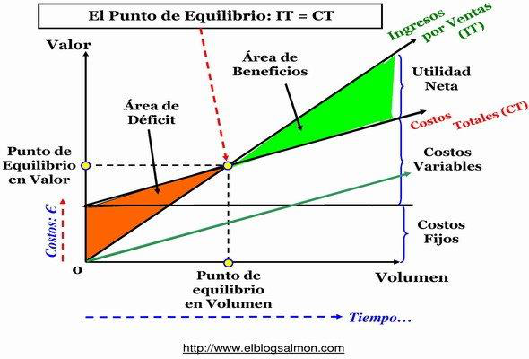
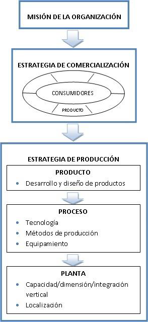

Administración de Empresas I · UCES · Modelo de 2º parcial de la cátedra (prueba 2023). Cada ejercicio tiene su resolución paso a paso: intentá hacerlo primero y después tocá "Mostrar solución".
📋 Qué entra
Este modelo combina lo que entra en el 2º parcial: Punto de Equilibrio (ejercicios 1 a 4 y definiciones del 8), Producción (localización, ejercicio 5) y Función de Recursos Humanos / Personal (ejercicios 6 y 7).
El gráfico que tenés que tener en la cabeza

Punto de Equilibrio: donde Ingreso Total (IT) = Costo Total (CT). Debajo de esa cantidad hay déficit; por encima, beneficios.
Fórmulas base. Equilibrio en unidades: Qe = CF ÷ (P − CVu). Equilibrio en valores: $e = Qe × P (o CF ÷ (1 − CVu/P)). Margen de contribución unitario: mc = P − CVu. P = precio · CVu = costo variable unitario · CF = costos fijos.
Ejercicio 1 — Hotel (Punto de Equilibrio)
1. Un hotel tiene ingresos por ventas promedio mensual de $550.000 alquilando en promedio 100 habitaciones. Costos fijos: sueldos $95.000 + agua y luz $10.400. Costo variable por habitación: $600.15 pts
a) Punto de equilibrio en unidades y valores.
b) Por la crisis bajan las ventas: encontrar el precio de equilibrio para 50 habitaciones.
c) Con ese precio, si los CF suben $20.000 y el CV por habitación sube 20%, ¿cuál es la nueva cantidad de equilibrio?
✓ Resolución
Datos previos:
Precio por habitación P = 550.000 ÷ 100 = $5.500
Costos fijos CF = 95.000 + 10.400 = $105.400
Costo variable unit. CVu = $600
Ejercicio 2 — Reventa de jeans (Punto de Equilibrio)
2. Emprendimiento de reventa de jeans. CV unitario $500. Viaje a Buenos Aires $13.500 por viaje (2 por mes). Le dedica 15 hs mensuales a $400 la hora. Otros insumos por venta (bolsas, envoltorios) $50 por unidad. Precio de venta $1.900.15 pts
a) Punto de equilibrio en unidades.
b) ¿Cuál sería su costo variable máximo para una cantidad de 12 jeans al mes?
c) Si deja su trabajo, dedica 40 hs mensuales y quiere una ganancia de $30.000, ¿cuántos jeans debe vender?
Da negativo → con estos costos fijos es imposible equilibrar vendiendo solo 12 jeans, porque 12 está por debajo del PE (24,4). Ni regalando la mercadería (CVu = 0) llega: a $0 de costo variable haría falta CF/P = 33.000/1.900 ≈ 18 jeans. Conclusión: 12 unidades no alcanzan el equilibrio.
c) Jeans para ganar $30.000 (ahora 40 hs: tiempo = 40 × 400 = 16.000 → CF = 27.000 + 16.000 = 43.000)
Conviene IMPORTAR: equilibra con 1.516 botellas vs. 2.239 fabricando (menos riesgo, llega antes a ganancias).
b) CF máximo de Fabricar (la menos conveniente) para igualar el PE de Importar
Que Qe(fabricar) = Qe(importar) = 1.516:
CF_fab = Qe × (P − CVu) = 1.515,15 × 67 = $101.515
CF máximo de fabricar ≈ $101.515 para empatar con importar
Ejercicio 4 — Fábrica de carteras (Punto de Equilibrio)
4. Vende en promedio 9.000 carteras/mes por $18.000.000. Costos mensuales: sueldos $108.500, insumos de producción $180.000, alquiler oficinas $15.000, comisión por ventas $150.500, tasa de alumbrado y barrido $15.000, publicidad fija $60.000.15 pts
a) PE en cantidad y valores. ¿Está por arriba o por debajo del equilibrio?
b) Cantidad para una utilidad de $120.000 mensuales.
c) Precio necesario para una cantidad de 98 carteras, manteniendo costos.
✓ Resolución
Clasificamos: los insumos y las comisiones dependen de las ventas (variables); el resto es fijo.
P = 18.000.000 ÷ 9.000 = $2.000 por cartera
CF = 108.500 + 15.000 + 15.000 + 60.000 = $198.500
CV total = 180.000 + 150.500 = 330.500 (para 9.000 u)
CVu = 330.500 ÷ 9.000 = $36,72 por cartera
Margen de contribución = 2.000 − 36,72 = $1.963,28
5. Teniendo en cuenta los factores determinantes para la localización, mencionar al menos 3.10 pts
✓ Respuesta (apunte: Solana, La función Producción — 13.5.b Localización)
La decisión de localización busca minimizar el flujo de la misma (costos de egreso a largo plazo). Los factores determinantes son, principalmente:
Disponibilidad de materia prima.
Disponibilidad de energía.
Posibilidad de contar con los recursos humanos necesarios.
Cercanía del mercado consumidor.
Leyes de promoción industrial.
La localización es una de las decisiones de la etapa de PLANTA dentro de la estrategia de producción (junto con capacidad, dimensión e integración vertical).

La Localización aparece en la etapa de PLANTA de la estrategia de producción.
Ejercicio 6 — Descriptivo de puesto (RRHH)
6. Teniendo en cuenta la Función de Recursos Humanos, determinar las partes y componentes de un descriptivo de puesto de trabajo.10 pts
✓ Respuesta (apunte: Solana, La función Personal — 15.2 Análisis de puestos)
El análisis de puestos define los objetivos, funciones, atribuciones y condiciones de cada puesto. La descripción del puesto generalmente comprende:
Identificación: título del cargo.
Nivel jerárquico.
Funciones: actividades asignadas u operaciones que realiza.
Relaciones: dependencia (de quién depende), autoridad (a quiénes supervisa) y vinculaciones con otros puestos.
Misión o responsabilidad principal.
Condiciones de trabajo: esfuerzo físico, ruido, stress, peligro, etc.
Horario de trabajo.
Distinto es la especificación del puesto, que detalla lo que necesita la persona: educación, experiencia, conocimientos y personalidad / condiciones humanas necesarias.
Ejercicio 7 — Definiciones de RRHH (RRHH)
7. Determinar a qué conceptos de la Función de Recursos Humanos corresponden estas definiciones.10 pts
Definición
Concepto
Define el planeamiento de la estructura organizacional futura y su evolución, la definición de los RH requeridos y la comparación del RH previsto vs. el actualmente disponible.
?
Su propósito es el mejoramiento de las aptitudes de los empleados para el desempeño de su profesión u oficio.
?
Actividad que tiene por objeto calificar al empleado en función de la eficiencia y la eficacia con que realiza sus funciones.
?
✓ Respuestas
Definición
Concepto
Planeamiento de la estructura futura, RH requeridos, previsto vs. disponible.
Planeamiento de los Recursos Humanos
Mejoramiento de las aptitudes para el desempeño de su profesión u oficio.
Capacitación (y desarrollo)
Calificar al empleado según la eficiencia y eficacia con que realiza sus funciones.
Evaluación del desempeño
Ejercicio 8 — Definiciones de Punto de Equilibrio (PE)
8. Determinar a qué conceptos corresponden estas definiciones.10 pts
Definición
Concepto
Por debajo de esta cantidad estamos en área de déficit y por encima en área de beneficios.
?
Diferencia entre los ingresos por ventas y los costos totales (fijos y variables).
?
Cómo contribuyen los precios de los productos/servicios a cubrir los costos y generar utilidad.
?
✓ Respuestas
Definición
Concepto
Debajo = déficit, encima = beneficios.
Punto de Equilibrio (cantidad de equilibrio)
Ingresos por ventas − costos totales.
Utilidad / Beneficio (resultado)
Cómo el precio cubre costos y genera utilidad.
Margen de contribución (contribución marginal)
🧮 Calculadora de Punto de Equilibrio
Practicá con tus propios números. Cargá precio, costo variable unitario y costos fijos.